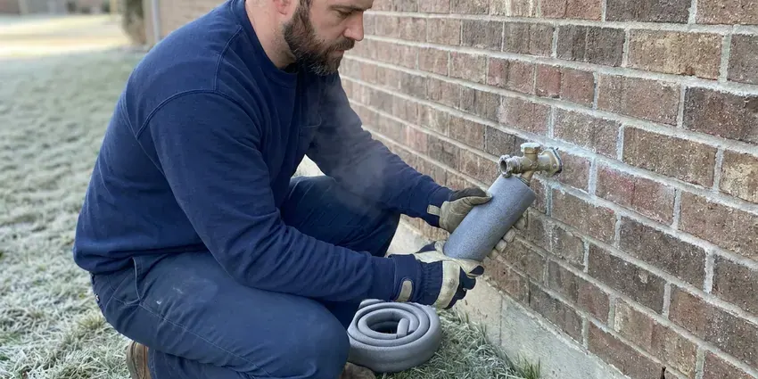

Drainage Services in Hagerstown, MD
Licensed plumbers at BVL Plumbing handle drainage across Hagerstown, MD, from a single sink to the main sewer.
- Written Pricing
- Camera Inspections Available
- Yard & Storm Drainage
- Licensed Plumbers

Need Drainage Services in Hagerstown, MD?
We handle drain clogs and yard runoff, big or small.
Drainage Repairs for Hagerstown, MD Homes
BVL Plumbing handles drainage work throughout Hagerstown, MD, from a kitchen sink that drains slowly to a backyard that floods every storm. Indoor lines get cleared and checked with a camera. Outside is different. Out in the yard, we watch where roof water lands and how the grade runs before recommending a drain.
Some of what we do:
- High-pressure jetting for grease and scale
- French drains, channel drains and pop-up emitters for yard runoff
- Video sewer inspection of main lines

Additional Plumbing Maintenance Services in Hagerstown, MD
Our maintenance and specialty plumbing services in Hagerstown, MD catch small problems before they become emergencies.


Customers
Why Choose BVL Plumbing for Drainage Services in Hagerstown, MD?
Our plumbers diagnose indoor drain problems with cameras and outdoor problems with a site walk. We look at roof area, slope and soil. That tells us how much water a yard drain has to carry during a heavy storm and where it can legally discharge, so the system is sized for the job instead of guessed at.
- Indoor and Outdoor, From a single clog to a full yard drain, we do the work.
- Advanced Tools, Our trucks carry sewer cameras and jetters to find and clear the problem.
- Local Knowledge, We know the drainage problems common in Hagerstown, MD, from clay sewers to flat lots.
Citywide Coverage
Commercial properties in Hagerstown get the same response times as homes. Grease lines are a common restaurant call. Property managers use us for parking lot catch basins and roof drain leaders, and we can work after hours so tenants are not dealing with jetting equipment in the hallway during business hours.
Experienced Team
Plumbers on our drain trucks clear lines in houses and restaurant kitchens. Grease lines take patience. A restaurant line packed with hardened grease can take an hour of jetting in stages, and our technicians know to clean the line in short passes so the loosened grease does not plug the line farther down.
Safety-First Approach
Drain work in Hagerstown follows the adopted plumbing code and any local rules on discharge. Yard water cannot go into the sanitary sewer. Yard drains go to legal outlets, and sewer work gets a permit where required.
Trusted Certified Hagerstown Plumbing Services Professionals
At BVL Plumbing, we are proud to offer certified plumbing services throughout Hagerstown, MD. Those papers on the wall mean something. Our plumbers hold recognized industry credentials, and they follow strict safety and quality rules on every repair, installation and maintenance call we run.
Call Us Now PHCC Plumbing Contractor Recognition
PHCC Plumbing Contractor Recognition Better Business Bureau (BBB) Accreditation
Better Business Bureau (BBB) Accreditation Angi Certified Pro
Angi Certified Pro ISO 9001 Quality Management Certification
ISO 9001 Quality Management CertificationIndoor and Outdoor Drainage in Hagerstown, MD
Drainage System Maintenance in Hagerstown
Maintenance on a drain system costs less than one emergency visit. For homes with a history of root intrusion, we cut roots from the sewer every 12 to 18 months and camera the line so we can see if a section needs repair before it collapses. Yard drains get flushed too.

Kitchen, Bath and Laundry Drain Clearing in Hagerstown
Slow sinks, gurgling tubs and overflowing laundry standpipes usually come from grease, hair and lint. Most municipal water across Maryland runs moderately hard, so scale slowly builds inside water heaters, faucet aerators and shower valves over the years. Scale inside older galvanized or cast iron drains narrows the pipe and gives that debris a rough surface to grab onto, which is why the same drain keeps clogging. Lint traps help laundry lines.
Commercial Drainage Services in Hagerstown
Retail centers and office buildings need floor drains, roof drains and parking lot catch basins that keep working. Property managers can set up regular service with us. A catch basin that fills with silt can flood a parking lot in one storm and send water into ground-floor suites, so we clean basins before the wet season and jet the lines that tie them together.
Sewer Camera Inspection in Hagerstown, MD
Recurring drain trouble needs a camera to see what is going on. We push a waterproof camera through the cleanout and record the trip to the street, and a locator in the camera head lets us mark the exact spot and depth of any problem on your lawn. You get the video. It is a smart step before buying a house.
Main Sewer Line Clearing in Hagerstown, MD
Several drains backing up at once means the main is blocked, not one fixture. We clear it from the outside cleanout with a drum machine and a root-cutting head, then camera the whole lateral to the city tap. No cleanout? We can install one so the next call costs less.
Restaurant and Industrial Drain Service in Hagerstown
Restaurants and industrial buildings send heavier loads down their drains than homes do. Interceptors need regular pumping. Kitchen lines get jetted between pump-outs, and we keep a service log for your inspector.
Fixture Drain Clearing in Hagerstown
Kitchen sinks clogged with grease and bathroom drains slowed by hair make up most of our fixture calls. Pulling the trap is often the fastest fix. Toilets get a closet auger, and if that fails, we pull the toilet and clear it from the flange.

Storm Drain & French Drain Installation in Hagerstown, MD
Heavy downpours expose every low spot in a yard. Low-lying waterfront areas also face tidal flooding, which can surcharge drains and affect septic systems near the shore. We install catch basins at the low points and run solid PVC to a legal outlet, sized so the pipe carries the water from a hard storm rather than backing up into the basin. Outlets need daylight or a dry well.
Drainage Services Near Me in Hagerstown, MD
Searching for drainage services near me in Hagerstown, MD usually means water is already where it should not be. We keep trucks nearby. Same-day main line clearing is normal, and we can come back after rain to watch the yard drain.
Local experience counts in drainage work because slope and soil change from block to block. Clay soil drains slowly. A dry well that works on sandy ground across town may fill and overflow on heavy clay, so we check how the soil drains on your lot before recommending a dry well over a daylight outlet.
BVL Plumbing at a Glance
- Licensed and insured plumbers serving Hagerstown, MD
- Same-day appointments and 24/7 emergency response
- Upfront, flat-rate pricing before work begins
- 4.8-star rated by 542+ Maryland customers
Hagerstown Map
Hagerstown Information
- Population
- 43,553
- Area codes
- 301/240/443
- Service area
- Hagerstown and communities within 40 miles
- Nearby
- Frederick, Germantown, Gaithersburg, Rockville
Homes in Hagerstown, MD need drains that keep up indoors and out. We clear lines and move runoff away from the foundation.
Talk to a Plumber
Reach out to BVL Plumbing for honest, reliable plumbing from people who know the trade in Hagerstown, MD.
Our Specialized Plumbing Services in Hagerstown, MD
At BVL Plumbing, you get every kind of plumbing service from one company across Hagerstown, MD. From leak detection to full system installs, our team works fast and charges fair prices on homes and commercial properties alike. Explore our core services below:


How We Fix Drainage Problems in Hagerstown, MD
We keep it straightforward: diagnose, explain the options and install a fix built to last.
Call Us
Call (443) 719-1650 and describe the drain problem. We set a time that works.
Diagnosis & Plan
Our technician checks the line, usually with a camera. You get the options and a price.
Expert Service
Once you approve, we clear or repair the line with the right tools.
Frequently Asked Questions About Drainage Services in Hagerstown
Drain clearing in Hagerstown usually runs $125 to $500 depending on the line, and hydro jetting runs $350 to $800. French drains cost more. Most residential French drain or downspout projects land between $2,000 and $8,000, depending on length, depth and how much hardscape we have to cut through or work around.
Roots usually enter through an existing crack or joint, then widen it as they grow. Over years, that can split clay pipe. A root mass can also push a joint out of line, creating an offset that catches waste, and in bad cases the pipe collapses and has to be dug up or lined from the inside.
Watch for water pooling near the house after storms. Mulch washing onto the walk is another sign. Inside, a damp crawlspace, a musty basement or efflorescence on the foundation wall all mean water is reaching the house instead of being carried away, and the problem usually starts at a downspout or a low spot.
Yes, sewer line repairs and replacements in Hagerstown, MD usually require a plumbing permit and an inspection. Drain clearing does not. We pull the permit, call 811 for locates, and schedule the inspection before backfilling so the inspector can see the new pipe, the bedding and the connections before they are buried.
Clearing a clog does not need a permit. Repairs to the pipe itself often do. Replacing a section of sewer, adding a cleanout, or connecting a new drain to the sewer generally requires a permit and an inspection, and we handle that paperwork and schedule the inspector as part of the job.
Most homes never need scheduled drain cleaning. A slow drain is the signal. Root-prone sewers and grease-heavy kitchens benefit from cleaning every one to two years.
A typical French drain or downspout system takes one to three days. Larger projects run longer. Projects with dry wells, long trench runs, or concrete that has to be saw-cut for a channel drain can take most of a week, especially if the ground is too wet to dig cleanly the first day.
Call when more than one drain is slow, or when a toilet gurgles while the washer drains. That usually means the main line. In the yard, water that stands for a day or more after rain is the cue.
Hear From Customers Who Hired Our Plumbing Experts

Sofia M.
Two new toilets went in during one visit. The tech set them on new wax rings and swapped the old supply lines. He also noticed our bathroom faucet dripping and replaced the cartridge while he was there. No mess left behind.
Toilet Installation · Frederick, MD
Karen W.
After our third pinhole leak in copper, we stopped patching. BVL Plumbing gave us a written plan room by room and repiped the house in PEX while we stayed in it. The crew covered our floors every morning and cleaned up every night.
Repiping · Aspen Hill, MD
Greg S.
I manage a small strip center with six tenants. BVL Plumbing handles our annual backflow testing and fixed a recurring clog in the shared sewer line that had been backing into the nail salon. Their reports come in clean and on time.
Commercial Plumbing · Rockville, MD
Lisa C.
Water was pouring out from under the washing machine on a holiday weekend. BVL Plumbing talked me through closing the valves over the phone and had a plumber at the house within ninety minutes. It was a burst fill hose.
Emergency Plumbing · Germantown, MD
Robert G.
The camera showed a full break in our clay sewer line near the street. BVL Plumbing replaced it with a trenchless pipe burst, so the only digging was two small pits in the yard. They let us watch the footage before and after.
Sewer Line Replacement · Germantown, MDDiane F.
My kitchen faucet had dripped for months and I finally got tired of hearing it at night. BVL Plumbing came out the next morning, replaced the cartridge and the O rings, and tightened a loose base that was letting water under the sink.
Faucet Repair · Gaithersburg, MD